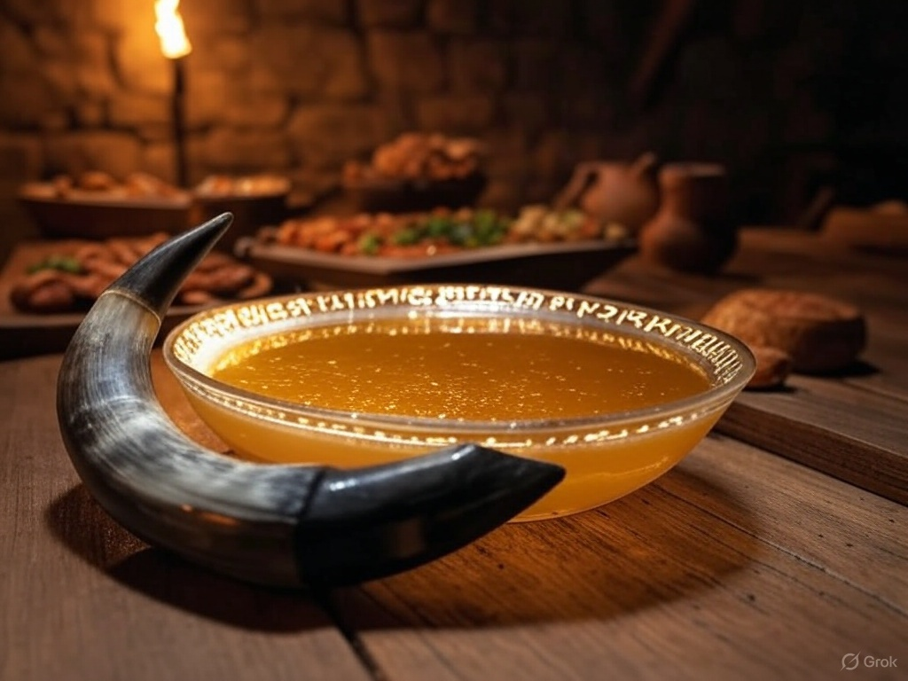

Home
Mead of Wisdom (Honey Mead)

Odin famously stole the Mead of Poetry, a magical drink that grants wisdom and poetic inspiration. This recipe
reflects his quest for knowledge.
Description:
A traditional fermented honey beverage, perfect as an offering or to enjoy during a feast in Odin's honor.
Ingredients:
- 3 lbs (1.36 kg) raw honey
- 1 gallon (3.8 liters) spring water
- 1 packet mead yeast (or wine yeast)
Optional: spices like cinnamon, cloves, or orange peel for flavor
Instructions:
- Sanitize all equipment to prevent contamination.
- Heat water to 160°F (71°C), then remove from heat and stir in honey until dissolved.
- Cool the mixture to room temperature, then pour into a sanitized fermentation vessel.
- Add yeast, seal with an airlock, and ferment in a dark, cool place (60–70°F or 15–21°C) for 4–6 weeks.
- Bottle and age for at least 3 months for best flavor. Serve chilled or at room temperature.